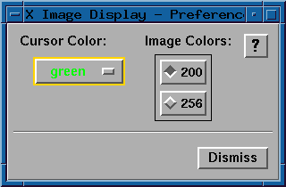

- 200:
- When selected, 200 image colors will be used on 8-bit displays and 200 image colors per channel will be used on 24-bit displays. This results in some color compression on all displays including 24-bit displays. As a result, each gray level in the image does not have it's own unique color map cell and mapping operations may not work as expected in all cases. For example, it may not be possible to color pixels with gray levels 0 and 1 different colors or map values 0 and 1 to different break points. 200 image colors is the default.
- 256:
- When selected, 256 image colors will be used on 8-bit displays and 256 image colors per channel will be used on 24-bit displays. With 256 colors there is no color compression done on the image data. The disadvantage to this method is that the image requires a separate color map from the other XID panels resulting in an increased color map "flashing" problem.